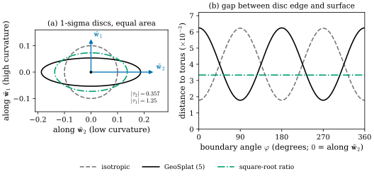
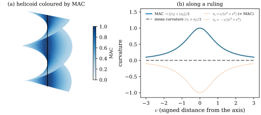
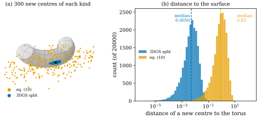

49.3 Geometry-Constrained Optimization
Goals
- normal과 principal curvature·direction이 주어졌을 때 GeoSplat이 Gaussian의 초기 covariance를 정하는 식 (3)–(5)를 쓰고, Proposition 3.1을 증명할 수 있다.
- GeoSplat의 scale 비(curvature의 비)가 surface와의 2차 오차를 줄이는 비(그 제곱근)와 어떻게 다른지 계산으로 보일 수 있다.
- mean curvature 대신 mean absolute curvature로 평평한 곳을 찾는 이유를 helicoid로 설명하고, upsampling 식 (6)을 쓸 수 있다.
- gradient truncation (7), shape regularization (8)–(9), split과 clone (10)–(11)이 각각 무엇을 제약하는지 말하고, 논문에 빠진 구현 세부와 식의 문제점을 짚을 수 있다.
Prerequisites
- Section 49.2: Gaussian마다 붙는 \(\tilde{\mathbf{u}}^i_3\)와 \((\tau^i_d, \tilde{\mathbf{w}}^i_d)\). 기호는 Table 49.1.1.
- covariance의 rotation·scale parametrization((29.2.1)), split과 clone(Section 29.4), densification과 Adam(Section 29.5).
- normal curvature와 Euler's formula((49.1.1)), minimal surface(Example 39.3.3).
Motivation
이 절에서는 geometry를 이미 안다고 가정한다. 곧 Gaussian \(\mathcal{G}^i\)마다 normal \(\tilde{\mathbf{u}}^i_3\), principal curvature \(\tau^i_1, \tau^i_2\)(\(\abs{\tau^i_1} \ge \abs{\tau^i_2}\)), principal direction \(\tilde{\mathbf{w}}^i_1, \tilde{\mathbf{w}}^i_2\)가 주어져 있다. 그 값을 어떻게 구하는지는 Section 49.4–49.5의 일이다.
3DGS 학습은 initialization, optimization, densification의 세 단계로 이루어진다. 논문 §3.1은 세 단계마다 geometry를 넣는 식을 하나 이상 준다. 모두 아홉 개의 식(3)–(11)과 명제 하나(Proposition 3.1)이고, 하나하나는 짧다. 그런데 식마다 “왜 이 꼴인가”와 “실제로 무엇을 하는가”를 따져 보면, 논문이 말하지 않은 선택과 고쳐야 할 곳이 여럿 나온다. 이 절은 식을 논문의 순서대로 읽고, 각 식 뒤에 논문의 설명과 이 장의 평가를 나누어 적는다.
Where Geometry Enters
먼저 전체를 보자 [GeoSplat25, §3.1].
- initialization(§3.1.1): covariance warm-up(식 (3)–(5), Proposition 3.1)과 primitive upsampling(식 (6)).
- optimization(§3.1.2): 위치의 truncated gradient update(식 (7))와 shape regularization(식 (8)–(9)).
- densification(§3.1.3): split의 새 위치(식 (10))와 clone의 이동(식 (11)).
부록 F.1에 따르면 \(\xi_{\min} = 0.001\), \(\xi_{\max} = \xi_{\text{mean}} + 3\xi_{\text{std}}\)(추정한 모든 curvature의 평균과 표준편차), upsampling의 이웃 수는 \(10\)이고, 전체 손실은 원래 3DGS의 손실에 \(\mathcal{L}_{\text{scale}}\)과 \(\mathcal{L}_{\text{rot}}\)을 더한 것이다 [GeoSplat25, App. F.1].
Curvature-Guided Covariance Warm-Up
3DGS는 위치 \(\boldsymbol{\mu}^i\)를 SfM 점으로 초기화하지만 covariance에는 geometry를 쓰지 않는다. 논문의 말로는 rotation은 임의로, scale은 등방적으로 \(\mathbf{S}^i = (s^i_{\text{nbr}}/2)\mathbf{I}\)로 둔다. 여기서 \(s^i_{\text{nbr}}\)은 몇몇 이웃까지의 평균 거리다. (3DGS 논문 [Kerbl23]은 가장 가까운 세 점까지 거리의 평균을 scale로 쓴다고 적고, 공개 구현은 rotation을 identity로 두고 세 이웃까지 거리의 제곱평균제곱근을 쓴다(Section 29.2). 어느 쪽에도 \(1/2\)은 없다. GeoSplat이 어느 코드를 기반으로 했는지, \(s^i_{\text{nbr}}\)의 정확한 정의와 \(1/2\)이 어디서 왔는지는 논문에 적혀 있지 않다.)
GeoSplat은 \(\mathcal{G}^i\)가 surface \(\mathcal{M}\) 위에 있다고 보고, 먼저 한 축을 normal에 맞추고 그 scale을 아주 작게 둔다 [GeoSplat25, eq. (3)].
그러면 Gaussian은 normal 방향으로 납작해져 surface에 붙고, 나머지 두 축은 tangent plane에 놓인다: \(\{\mathbf{r}^i_1, \mathbf{r}^i_2\} \subseteq T_{\mathbf{q}}\mathcal{M}\). 이것은 Section 29.1의 “가장 짧은 축이 normal”을 처음부터 강제하는 것이다. 다음으로 두 tangent 축을 principal direction에 맞추고 scale의 비를 curvature로 정한다 [GeoSplat25, eq. (4)].
곧 긴 축 \(\mathbf{r}^i_1\)은 덜 휜 방향 \(\tilde{\mathbf{w}}^i_2\)로, 짧은 축 \(\mathbf{r}^i_2\)는 더 휜 방향 \(\tilde{\mathbf{w}}^i_1\)로 가고, 두 scale의 비는 두 radius of curvature \(1/\abs{\tau^i_2}\)와 \(1/\abs{\tau^i_1}\)의 비, 곧 \(\abs{\tau^i_1/\tau^i_2}\)다.
논문의 설명: \(\mathbf{r}^i_1, \mathbf{r}^i_2\)는 covariance의 eigenvector이므로 분산이 최대인 방향과 최소인 방향이다. 같은 길이라면 평평한 곡선 위에서 뽑은 점들이 많이 휜 곡선 위에서 뽑은 점들보다 덜 몰려 있으므로, 최대 표준편차 \(s^i_1\)을 작은 curvature \(\tau^i_2\)에, 최소 표준편차 \(s^i_2\)를 큰 curvature \(\tau^i_1\)에 잇는다. 이것은 통계적인 비유이고, 왜 비가 정확히 radius of curvature의 비인지는 논증하지 않는다. 아래 Example 49.3.3에서 기하적인 기준과 비교한다.
(49.3.2)는 비만 정하므로 scale은 하나가 더 필요하다. 논문은 넓이를 보존하는 조건을 더한다.
Proposition 49.3.1 (curvature-constrained primitive scales) [GeoSplat25, Prop. 3.1]. (49.3.2)의 비 조건과 넓이 조건 \(s^i_1s^i_2 = (s^i_{\text{nbr}})^2/4\)가 함께 성립하면
\[ s^i_1 = \frac{s^i_{\text{nbr}}}{2}\sqrt{\abs{\frac{\tau^i_1}{\tau^i_2}}}, \qquad s^i_2 = \frac{s^i_{\text{nbr}}}{2}\sqrt{\abs{\frac{\tau^i_2}{\tau^i_1}}} \]
이다. 이 해에서 Gaussian의 \(1\sigma\) 영역을 tangent plane \(T_{\mathbf{q}}\mathcal{M}\)에 project한 넓이는 warm-up 전과 같다.
Proof. 부록 C의 증명을 따른다. 두 조건(논문 식 (24))을 곱하고 나누면 \((s^i_1)^2 = (s^i_1s^i_2)(s^i_1/s^i_2) = \tfrac14(s^i_{\text{nbr}})^2\abs{\tau^i_1/\tau^i_2}\), \((s^i_2)^2 = (s^i_1s^i_2)/(s^i_1/s^i_2) = \tfrac14(s^i_{\text{nbr}})^2\abs{\tau^i_2/\tau^i_1}\)이고, 양의 제곱근을 취하면 위의 해다(식 (25)–(26)). scale은 양수이므로 해는 하나뿐이다. 넓이: \(1\sigma\) 영역은 축이 \(\mathbf{r}^i_1, \mathbf{r}^i_2, \mathbf{r}^i_3\)이고 반축이 \(s^i_1, s^i_2, s^i_3\)인 ellipsoid다. \(\mathbf{r}^i_3 = \tilde{\mathbf{u}}^i_3\)이므로 이것을 tangent plane에 project하면 반축이 \(s^i_1, s^i_2\)인 ellipse이고, 넓이는 \(\pi s^i_1s^i_2 = \pi(s^i_{\text{nbr}}/2)^2\)이다. 이것은 warm-up 전의 원(반지름 \(s^i_{\text{nbr}}/2\))의 넓이와 같다. 논문은 같은 결론을 ellipsoid의 부피 \(\mathfrak{V} = s^i_1s^i_2s^i_3\)를 \(s^i_3\)로 나누어 얻는다(식 (27)–(28), 상수 \(4\pi/3\)과 \(\pi\)는 생략했다).
정리하면 warm-up한 covariance는 [GeoSplat25, eq. (5)]
이다. 이 식은 \(\tau^i_d \ne 0\)을 가정한다. curvature가 \(0\)인 경우를 위해 논문은 \(\min(\max(\tau^i_d, \xi_{\min}), \xi_{\max})\)로 자른다(clamp).
Example 49.3.2 (warm-up on the torus). Figure 49.2.2의 점, 곧 torus \(T_{2,0.8}\)의 바깥 적도 위의 \(\mathbf{q} = (2.8, 0, 0)\)에 Gaussian이 있다고 하자. \(\abs{\tau_1} = 1.25\)(방향 \(\tilde{\mathbf{w}}_1 = e_z\)), \(\abs{\tau_2} = 1/2.8 = 0.357\)(방향 \(\tilde{\mathbf{w}}_2 = e_y\))이고 비는 \(\abs{\tau_1/\tau_2} = 3.5\)다. 이웃 거리를 \(s_{\text{nbr}} = 0.2\)라 하면 3DGS식 초기값은 반지름 \(0.1\)인 disk이고, Proposition 49.3.1은 \(s_1 = 0.1\sqrt{3.5} = 0.1871\)(\(e_y\) 방향), \(s_2 = 0.1/\sqrt{3.5} = 0.0535\)(\(e_z\) 방향), \(s_3 = 0.001\)(\(e_x\) 방향)을 준다. \(s_1s_2 = 0.01 = 0.1^2\)이므로 tangent plane의 넓이는 그대로다.
Verification: verify/v-49-3-geometry-constrained-optimization.py
이 Gaussian은 surface를 얼마나 잘 따라가는가? tangent plane에 놓인 납작한 disk는 방향 \(\theta\)로 반축 \(\ell\)만큼 간 가장자리에서 surface와 대략 \(\tfrac12\abs{\kappa_n(\theta)}\ell^2\)만큼 벌어진다((49.1.1), Example 49.1.1). 이 “가장자리의 틈”을 세 가지 모양에 대해 재 보자.
Example 49.3.3 (the curvature ratio swaps the gaps; its square root balances them). 넓이 조건 \(s_1s_2 = c^2\) 아래에서 principal curvature가 \(\kappa_1 \gt \kappa_2 \gt 0\)(크기)인 점을 생각하자. 반축의 끝에서 틈은 2차 근사로 긴 축(덜 휜 방향) \(\tfrac12\kappa_2s_1^2\), 짧은 축(더 휜 방향) \(\tfrac12\kappa_1s_2^2\)이다.
- 등방(\(s_1 = s_2 = c\)): 두 틈은 \(\tfrac12\kappa_2c^2\)와 \(\tfrac12\kappa_1c^2\)다. 큰 쪽은 \(\tfrac12\kappa_1c^2\)이다.
- GeoSplat(\(s_1/s_2 = \kappa_1/\kappa_2\), 곧 \(s_1^2 = c^2\kappa_1/\kappa_2\), \(s_2^2 = c^2\kappa_2/\kappa_1\)): 긴 축의 틈은 \(\tfrac12\kappa_2\cdot c^2\kappa_1/\kappa_2 = \tfrac12\kappa_1c^2\), 짧은 축의 틈은 \(\tfrac12\kappa_2c^2\)이다. 등방일 때의 두 틈이 자리만 바꾼다. 가장 큰 틈은 줄지 않는다.
- 제곱근 비(\(s_1/s_2 = \sqrt{\kappa_1/\kappa_2}\)): 두 틈이 모두 \(\tfrac12c^2\sqrt{\kappa_1\kappa_2}\)로 같다. 두 틈의 곱은 비와 상관없이 \(\tfrac14c^4\kappa_1\kappa_2\)이므로, 이것이 가장 큰 틈을 최소로 하는 비다(산술·기하 평균).
Example 49.3.2의 torus(\(c = 0.1\))에서 torus까지의 실제 거리로 재면, 등방은 \(e_y\) 방향 \(0.00179\), \(e_z\) 방향 \(0.00623\)이고, GeoSplat은 \(e_y\) 방향 \(0.00624\), \(e_z\) 방향 \(0.00178\)이며, 제곱근 비(반축 \(0.137\), \(0.073\))는 두 방향 모두 \(0.00334\)다. 2차 근사의 \(\tfrac12c^2\sqrt{\kappa_1\kappa_2} = 0.00334\)와 맞는다. 이것은 이 장의 계산이고, “최대 틈을 줄인다”는 기준은 논문의 기준이 아니다.
Verification: verify/v-49-3-geometry-constrained-optimization.py
Figure 49.3.1이 이 비교다. (a)는 같은 넓이의 세 \(1\sigma\) disk를 tangent plane에 그린 것이다. 가로축이 덜 휜 방향 \(\tilde{\mathbf{w}}_2\), 세로축이 더 휜 방향 \(\tilde{\mathbf{w}}_1\)이다. 회색 파선 원이 등방, 검은 납작한 ellipse가 GeoSplat, 초록 일점쇄선 ellipse가 제곱근 비다. (b)는 각 ellipse의 가장자리를 한 바퀴 돌면서(\(\varphi\)는 \(\tilde{\mathbf{w}}_2\)에서 잰 각) 그 점에서 torus까지의 거리를 그린 것이다. 회색 파선은 \(\varphi = 90^\circ\)(세로 끝)에서, 검은 실선은 \(\varphi = 0^\circ\)(가로 끝)에서 약 \(0.0062\)까지 올라가 높이가 같다. 초록 선은 거의 평평하게 \(0.0033\)이다.

이 장의 평가: warm-up의 두 부분 가운데 축의 방향((49.3.1)과 principal direction에 맞추기)은 기하적으로 자연스럽다. scale의 비는 휴리스틱이다. “surface에서 벗어나지 않는다”를 기준으로 하면 비는 \(\abs{\tau_1/\tau_2}\)가 아니라 그 제곱근이어야 하고, 논문의 비는 등방보다 낫지 않다(Example 49.3.3). 다만 warm-up은 초기값일 뿐이고 학습이 scale을 다시 바꾼다. 또 뒤의 (49.3.7)은 비가 \(\abs{\tau_1/\tau_2}\)를 넘을 때만 벌하므로, 제곱근 비는 그 regularizer와도 충돌하지 않는다. 논문의 ablation(Table 3)에서 warm-up을 빼면 PSNR이 줄어드는데(Section 49.6), 그 이득이 비의 선택에서 오는지 축의 방향에서 오는지는 실험이 구별하지 않는다.
Curvature-Guided Upsampling
SfM 점에서 시작한 Gaussian은 수가 충분하지 않은 경우가 많다. SAGS(Ververas et al. 2025)는 학습 전에 Gaussian이 적은 low-curvature 영역을 채웠는데, 그 영역을 mean curvature로 찾았고 mean curvature 자체도 낮은 차수의 양으로 근사했다. GeoSplat은 두 principal curvature를 모두 가지므로 mean curvature \((\tau^i_1 + \tau^i_2)/2\)를 근사 없이 계산할 수 있다. 그러나 논문은 mean curvature로 평평한 곳을 찾는 것 자체가 옳지 않다고 지적한다 [GeoSplat25, §3.1.1]. 반례는 helicoid다.
Figure 49.3.2의 (a)는 helicoid \(\mathbf{x}(u, v) = (v\cos u, v\sin u, cu)\)(\(c = 1\))이다. 축(검은 선)을 따라 올라가며 직선이 돌아가는 나선 계단 모양의 surface다. 색이 진할수록 많이 휘었다. 축 근처는 진하고 멀어질수록 옅다. (b)는 한 직선(ruling)을 따라 잰 값이다. 주홍 점선 두 개가 principal curvature \(\pm c/(c^2 + v^2)\)이고, 둘은 크기가 같고 부호가 반대다. 그래서 회색 파선인 mean curvature는 어디서나 \(0\)이다. 파란 실선은 두 크기의 평균이고 \(v = 0\)에서 \(1\)까지 올라간다.

그래서 논문은 다음 양을 쓴다.
Definition 49.3.4 (mean absolute curvature) [GeoSplat25, §3.1.1]. Gaussian \(\mathcal{G}^i\)의 mean absolute curvature(평균 절대 곡률, MAC)는
이다. surface(\(D_{\mathcal{M}} = 2\))에서는 \((\abs{\tau^i_1} + \abs{\tau^i_2})/2\)다.
Example 49.3.5 (helicoid: zero mean curvature, positive MAC). helicoid의 Gaussian curvature는 \(K = -c^2/(c^2 + v^2)^2\)이고 mean curvature는 \(H = 0\)이다. 그래서 principal curvature는 \(\pm\sqrt{-K} = \pm c/(c^2 + v^2)\)이고 MAC는 \(c/(c^2 + v^2)\)이다(Figure 49.3.2). \(c = 1\)이면 축 위에서 \(1\), \(v = 2\)에서 \(0.2\)다. 논문은 이 surface를 “helical surface”라 부르고 “mean curvature는 \(0\)이지만 휘어 있다(\(\prod_d\tau^i_d \ne 0\))”고 쓴다. helicoid는 minimal surface이고, 모든 minimal surface가 같은 반례다(Example 39.3.3). 더 가까운 예는 Exercise 49.1.3의 saddle \(z = x^2 - y^2\)다. 원점에서 \(H = 0\), MAC \(= 2\)이다.
Verification: verify/v-49-3-geometry-constrained-optimization.py
MAC가 아주 작으면(\(\bar\tau^i \lt \xi_{\min}\)) 그 Gaussian은 거의 평평한 곳에 있다고 보고, 이웃과의 중점에 새 Gaussian을 놓는다 [GeoSplat25, eq. (6)].
\(\operatorname{KNN}(i)\)는 \(\mathcal{I}\) 안에서 \(\mathcal{G}^i\)의 최근접 이웃들의 index, \(i'\)는 새 index다. 색 같은 다른 속성도 같은 midpoint interpolation으로 정한다. 평평한 곳이므로 두 중심을 잇는 선분의 중점은 surface 가까이에 있다. 반지름 \(\rho\)인 원 위의 두 점을 잇는 길이 \(d\)의 현에서 중점이 원에서 떨어진 거리는 \(d^2/(8\rho) + O(d^4)\)이다(Exercise 49.3.2). radius of curvature \(\rho = 1/\kappa\)가 클수록 중점은 surface에 가깝다.
이 장의 평가: 두 가지가 불분명하다. 첫째, \(\xi_{\min} = 0.001\)은 (49.3.1)에서는 길이(scale)로, 여기서는 curvature(길이의 역수)로 쓰인다. MAC \(\lt 0.001\)은 radius of curvature가 장면 단위로 \(1000\)보다 크다는 뜻이므로, 장면의 단위(SfM의 임의의 축척)에 따라 기준이 바뀐다. 추정한 curvature에 잡음이 있으면 이 기준을 통과하는 Gaussian은 매우 드물 수 있다(Section 49.6에서 작은 실험으로 본다). 둘째, 부록 F.1은 KNN의 이웃 수를 \(10\)으로 적지만, 이웃 \(10\)개 모두와 중점을 만드는지(Gaussian 하나당 최대 \(10\)개) 하나만 고르는지는 논문에 적혀 있지 않다. 논문의 Figure 7에 보이는 새 점들의 배치는 여러 개 쪽과 어울린다.
Truncated Gradient Update
3DGS의 렌더링 품질을 떨어뜨리는 대표적인 artifact는 떠 있는 Gaussian(floater)이다. 기하적으로 보면 surface에서 크게 벗어난 Gaussian은 outlier다. 논문은 위치의 gradient update에서 normal 성분의 크기를 잘라 outlier를 줄인다 [GeoSplat25, eq. (7)].
\(\omega\)는 learning rate, \(\nabla^i\mathfrak{L}\)은 손실의 \(\boldsymbol{\mu}^i\)에 대한 gradient, \((\cdot)^\top\)은 tangent plane \(T_{\mathbf{q}}\mathcal{M}\)으로의 orthogonal projection(transpose가 아니다, Table 49.1.1), \((\cdot)^\perp\)은 normal \(\tilde{\mathbf{u}}^i_3\) 방향으로의 projection이다. 논문은 \(\lambda^i\)를 따로 이름 짓지 않고 한 줄에 쓴다. tangent 성분은 그대로 두고, normal 성분은 길이가 \(\xi_{\min}\)을 넘으면 \(\xi_{\min}\)으로 줄인다. 곧 gradient clipping을 normal 성분에만 하는 것이다. 그래서 한 번의 update로 surface에서 멀어지는 거리는 많아야 \(\omega\xi_{\min}\)이다. 논문은 “surface 위의 Gaussian은 공격적인 gradient update 뒤에도 surface 가까이에 남는다”고 설명한다.
Shape Regularization
또 하나의 artifact는 바늘 모양 Gaussian이다 [Hyung24]. covariance가 rank 1로 퇴화한 Gaussian은 surface를 선처럼만 덮는다. 논문은 두 tangent scale \(s^i_1, s^i_2\)로 rank 2를 유지하고 normal scale \(s^i_3\)는 작게 하려고 hinge 꼴의 regularizer를 둔다 [GeoSplat25, eq. (8)].
첫 항은 비 \(s^i_1/s^i_2\)가 curvature가 허용하는 \(\abs{\tau^i_1/\tau^i_2}\)((49.3.2))보다 \(\xi_{\min}\) 넘게 크면, 곧 짧은 scale \(s^i_2\)가 너무 작으면 벌한다. 둘째 항은 \(s^i_3\)를 \(0\)으로 밀어 covariance의 rank를 \(3\)보다 작게, 곧 Gaussian을 surface에 붙은 disk로 만든다. rotation도 같은 생각으로 principal direction에 맞춘다 [GeoSplat25, eq. (9)].
이 장의 평가: 두 식을 실제 값에 대 보면 다음이 보인다.
- hinge는 비의 위쪽 한계다. 비가 \(\abs{\tau_1/\tau_2}\)보다 작은 모양(등방이나 제곱근 비)은 벌하지 않는다. 그런데 clamp를 거친 값으로 보면, 완전히 평평한 곳은 \(\abs{\tau_1} = \abs{\tau_2} = \xi_{\min}\)이 되어 비의 한계가 \(1.001\)이다. 벽과 바닥의 Gaussian은 거의 disk여야 한다. 반대로 반지름 \(1\)인 cylinder는 \(\abs{\tau_2}\)가 \(\xi_{\min}\)으로 잘려 한계가 \(1000\)이 되므로 바늘도 벌하지 않는다. 실제 추정값은 잡음 때문에 \(0\)이 아니므로, 평평한 곳의 한계는 잡음의 비로 정해진다.
- \(\mathcal{L}_{\text{rot}}\)은 부호에 민감하다. principal direction과 normal은 부호가 정해지지 않는다. \(\mathbf{r}^i_1 = -\tilde{\mathbf{w}}^i_2\)는 같은 축인데 벌점이 최대 \(4\)다. \(1 - \inner{\cdot}{\cdot}^2\)이나 \(1 - \abs{\inner{\cdot}{\cdot}}\)이 자연스럽다(Exercise 49.3.3). 논문은 부호를 맞추는 처리를 쓰지 않는다.
- umbilic point에서 principal direction은 정해지지 않는다. plane과 sphere처럼 \(\tau_1 = \tau_2\)인 곳(Definition 8.3.7)에서는 \(\tilde{\mathbf{w}}_1, \tilde{\mathbf{w}}_2\)가 tangent plane의 아무 방향이나 될 수 있다. 추정값은 잡음이 정하는 방향이고, \(\mathcal{L}_{\text{rot}}\)의 앞 두 항은 그 방향을 강요한다.
- 가중치가 없다. 두 손실에 곱한 가중치, Gaussian에 대해 더하는지 평균하는지는 논문에 적혀 있지 않다.
Curvature-Regularized Densification
split과 clone은 texture가 많은 곳을 렌더링하는 데 꼭 필요하지만 floater를 만들기도 한다(Li et al. 2025). 기하적으로는 새 Gaussian \(\mathcal{G}^{i'}\)(\(i' \notin \mathcal{I}\))이 surface에서 벗어난 곳에 놓이는 것이 문제다. 논문은 split의 새 위치를 principal direction으로 제한한다. \(\boldsymbol{\rho} = [\rho_1, \rho_2, \rho_3]^{\mathsf T} \sim \mathcal{N}(\mathbf{0}, \mathbf{I})\)를 뽑아 [GeoSplat25, eq. (10)]
로 둔다. 논문의 설명: 앞의 두 항은 새 Gaussian을 tangent plane 근처에 두고, 마지막 항은 normal 방향으로 아주 조금만 흔든다. curvature를 가중치로 쓰는 것은 sampling을 sparse한 영역 쪽으로 치우치게 하려는 것이다. 비교하면, 3DGS의 split은 새 중심을 \(\mathcal{N}(\boldsymbol{\mu}^i, \boldsymbol{\Sigma}^i)\)에서 뽑는다(Section 29.4). 변위의 크기가 Gaussian 자신의 scale이다. (49.3.9)에서 \(\tilde{\mathbf{w}}^i_d\) 방향 변위의 표준편차는 radius of curvature \(1/\abs{\tau^i_d}\)이고, Gaussian의 크기와 상관이 없다.
Example 49.3.6 (split on the torus). Example 49.3.2의 Gaussian(scale \((0.1871, 0.0535, 0.001)\))을 split한다. (49.3.9)를 인쇄된 그대로 쓰면 변위의 표준편차는 \(e_z\) 방향 \(1/1.25 = 0.8\), \(e_y\) 방향 \(2.8\)이다. 새 중심 \(20{,}000\)개를 뽑으면 \(\mathbf{q}\)에서의 거리의 중앙값은 \(2.06\)이고, torus까지의 거리의 중앙값은 \(0.83\)이다(표본에 따라 둘째 자리가 조금 달라진다. \(10^6\)개로 뽑으면 \(2.08\)과 \(0.85\)다). 관의 반지름이 \(0.8\)이므로 새 Gaussian의 절반은 surface에서 관의 굵기만큼 떨어져 있다. 3DGS식 \(\mathcal{N}(\boldsymbol{\mu}, \boldsymbol{\Sigma})\)로 뽑으면 두 값은 \(0.14\)와 \(0.0050\)이다. 완전히 평평한 곳에서 \(\abs{\tau}\)를 \(\xi_{\min}\)으로 clamp하면 표준편차는 \(1/\xi_{\min} = 1000\)(장면 단위)이 된다.
Verification: verify/v-49-3-geometry-constrained-optimization.py
Figure 49.3.3이 이 예다. (a)에서 회색 반쪽 torus 옆의 검은 점이 \(\mathbf{q}\)다. 파란 점(3DGS split)은 \(\mathbf{q}\) 바로 옆에 작게 뭉쳐 있고, 주황 점(인쇄된 식 (10))은 \(\mathbf{q}\)의 tangent plane을 따라 torus보다 넓게 퍼져 있다. (b)는 torus까지의 거리의 히스토그램(가로축 log)이다. 두 분포는 두 자릿수 넘게 떨어져 있다.

이 장의 평가: 인쇄된 식 (10)은 floater를 줄이려는 의도와 반대로 동작한다. radius of curvature는 Gaussian의 크기와 단위가 같지만(길이) 크기가 전혀 다르고, 평평한 곳에서는 발산한다. 실제 구현은 아마 radius of curvature에 어떤 축척(예: Gaussian의 scale)을 곱했을 것이지만, 그 축척은 논문에 적혀 있지 않다. 또 “curvature로 나누면 sampling이 sparse한 영역으로 치우친다”는 주장에는 논증이 없다. \(\tau\)의 부호는 \(\rho_d\)가 symmetric이므로 상관없다.
clone은 누적 gradient \(\bar\nabla^i\mathfrak{L}\)의 normal 성분을 (49.3.6)처럼 잘라 이동시킨다 [GeoSplat25, eq. (11)].
normal 방향 이동을 잘랐으므로 새 outlier가 줄어든다는 것이 논문의 설명이다. 이 장의 평가: 이 식은 세 군데가 모호하다. (a) (49.3.6)과 달리 부호가 \(+\)이고 learning rate가 없다. 3DGS 논문이 clone한 사본을 “positional gradient 방향으로” 옮긴다고 쓴 것(Section 29.4)을 그대로 식으로 옮긴 것으로 보이지만, 손실의 gradient 방향으로 가면 손실이 커진다. (b) 3DGS 공식 구현의 clone은 Gaussian을 그 자리에 복사만 하고 이동은 이후의 optimizer에 맡긴다. (c) 3DGS가 누적하는 “gradient”는 view-space 위치 gradient의 크기(스칼라)이고, densify할 Gaussian을 고르는 데 쓴다 [Kerbl23]. 식 (11)의 \(\bar\nabla^i\mathfrak{L}\)은 3D vector여야 한다. 무엇을 누적했는지, 부호와 걸음 크기는 논문에 적혀 있지 않다.
Summary
- warm-up은 가장 짧은 축을 normal에, 두 긴 축을 principal direction에 맞추고((49.3.1)–(49.3.2)), 비 \(s_1/s_2 = \abs{\tau_1/\tau_2}\)와 넓이 보존 \(s_1s_2 = (s_{\text{nbr}}/2)^2\)로 scale을 정한다(Proposition 49.3.1, (49.3.3)). clamp는 \(\abs{\tau}\)에 해야 한다.
- 같은 넓이에서 curvature의 비는 surface와의 최대 틈을 줄이지 않고 그 위치를 바꾼다. 최대 틈을 최소로 하는 비는 그 제곱근이다(Example 49.3.3, Figure 49.3.1).
- 평평한 곳은 mean curvature가 아니라 MAC \(\bar\tau = (\abs{\tau_1} + \abs{\tau_2})/2\)로 찾는다(helicoid, Example 49.3.5). MAC \(\lt \xi_{\min}\)이면 이웃과의 중점에 Gaussian을 더한다((49.3.5)).
- optimization에서는 gradient의 normal 성분을 \(\xi_{\min}\)으로 자르고((49.3.6), Adam과의 결합은 불분명), scale의 비와 rotation을 curvature에 맞추도록 벌한다((49.3.7)–(49.3.8), 부호와 umbilic point 문제).
- split은 principal direction을 따라 radius of curvature만큼 흩뜨린다((49.3.9)). 인쇄된 그대로면 새 Gaussian이 surface에서 멀리 간다(Example 49.3.6). clone((49.3.10))은 부호와 누적 gradient의 뜻이 모호하다.
다음 절에서는 이 모든 식에 들어가는 \(\tilde{\mathbf{u}}^i_3\)와 \((\tau^i_d, \tilde{\mathbf{w}}^i_d)\)를 어떻게 구하는지 본다. 논문 §3.2의 Theorem 3.2(manifold 기반 estimator의 요약), 부록 B의 Koszul formula, 그리고 [BLM22]의 weak second fundamental form을 \(2 \times 2\) matrix로 바꾼 식 (12)와 부록 D다.
Quick check
Exercise 49.3.1 ★ \(s_{\text{nbr}} = 0.1\), \(\tau_1 = -2\), \(\tau_2 = 0.5\)(saddle 같은 점)일 때 (49.3.3)의 세 scale을 구하라. 넓이 조건을 확인하고, 제곱근 비를 쓰면 scale이 어떻게 되는지도 구하라.
Solution
\(\abs{\tau_1/\tau_2} = 4\)이므로 \(s_1 = 0.05\cdot2 = 0.1\), \(s_2 = 0.05/2 = 0.025\), \(s_3 = 0.001\)이다. \(s_1s_2 = 0.0025 = 0.05^2\)이다. 제곱근 비 \(\sqrt4 = 2\)를 쓰면 \(s_1 = 0.05\sqrt2 = 0.0707\), \(s_2 = 0.05/\sqrt2 = 0.0354\)이다. 부호가 다른 curvature도 clamp를 \(\abs{\tau}\)에 하면 문제가 없다. 인쇄된 clamp를 \(\tau\)에 쓰면 \(\tau_1 = -2\)가 \(0.001\)이 되어 비가 \(0.002\)로 뒤집힌다.
Verification: verify/v-49-3-geometry-constrained-optimization.py
Exercise 49.3.2 ★ 반지름 \(\rho\)인 원 위의 두 점을 잇는 길이 \(d\)의 현을 생각하자. 현의 중점이 원에서 떨어진 거리가 \(\rho - \sqrt{\rho^2 - d^2/4} = d^2/(8\rho) + O(d^4)\)임을 보여라. \(\rho = 1\), \(d = 0.1\)이면 얼마인가? 이것이 (49.3.5)의 upsampling에 주는 뜻은?
Solution
중심에서 현까지의 거리는 \(\sqrt{\rho^2 - d^2/4}\)이므로 중점과 원 사이의 거리는 \(\rho - \sqrt{\rho^2 - d^2/4}\)이다. \(\sqrt{1 - x} = 1 - x/2 + O(x^2)\)에 \(x = d^2/(4\rho^2)\)를 넣으면 \(d^2/(8\rho) + O(d^4)\)이다. \(\rho = 1\), \(d = 0.1\)이면 \(0.00125\)다. 중점의 오차는 이웃 간격의 제곱과 curvature \(1/\rho\)에 비례한다. 그래서 midpoint interpolation은 curvature가 작은 곳에서만 surface 가까이에 Gaussian을 놓는다. GeoSplat이 MAC로 그런 곳을 고르는 이유다.
Verification: verify/v-49-3-geometry-constrained-optimization.py
Exercise 49.3.3 ★ Gaussian의 축이 principal direction과 같은 직선 위에 있지만 방향이 반대(\(\mathbf{r}_1 = -\tilde{\mathbf{w}}_2\))일 때 (49.3.8)의 첫 항은 얼마인가? 같은 축이면 \(0\)이 되도록 고쳐라.
Solution
\(\inner{\mathbf{r}_1}{\tilde{\mathbf{w}}_2} = -1\)이므로 \((1 - (-1))^2 = 4\)로, 가능한 최대 벌점이다. 그러나 Gaussian은 축의 방향이 반대여도 같은 모양이다(\(\boldsymbol{\Sigma} = \mathbf{R}\mathbf{S}^2\mathbf{R}^{\mathsf T}\)는 열의 부호를 바꿔도 같다). \((1 - \inner{\mathbf{r}_1}{\tilde{\mathbf{w}}_2}^2)^2\)이나 \((1 - \abs{\inner{\mathbf{r}_1}{\tilde{\mathbf{w}}_2}})^2\)로 쓰면 \(\pm\tilde{\mathbf{w}}_2\) 모두 \(0\)이다.
Verification: verify/v-49-3-geometry-constrained-optimization.py
Exercise 49.3.4 ★ 다음 점의 mean curvature와 MAC를 구하고, \(\xi_{\min} = 0.001\)에서 upsampling 대상인지 판정하라. (a) saddle \(z = x^2 - y^2\)의 원점, (b) 반지름 \(1\)인 cylinder, (c) 반지름 \(2000\)인 sphere. 장면 단위를 미터에서 센티미터로 바꾸면 (c)의 판정은 어떻게 되는가?
Solution
(a) \(\tau = (2, -2)\): \(H = 0\), MAC \(= 2\). 대상이 아니다(mean curvature로 판정하면 잘못 대상이 된다). (b) \(\tau = (1, 0)\): \(\abs{H} = 0.5\), MAC \(= 0.5\). 대상이 아니다. (c) \(\tau = (0.0005, 0.0005)\)(크기): MAC \(= 0.0005 \lt 0.001\). 대상이다. 센티미터로 바꾸면 반지름이 \(200{,}000\)이 되고 curvature는 \(1/100\)배이므로 여전히 대상이지만, 반대로 반지름 \(500\)미터의 sphere는 미터 단위에서 MAC \(= 0.002\)로 대상이 아니고 센티미터 단위에서 \(0.00002\)로 대상이 된다. \(\xi_{\min}\)은 단위가 있는 양과 비교되므로 장면의 축척에 따라 판정이 바뀐다.
Verification: verify/v-49-3-geometry-constrained-optimization.py
Exercise 49.3.5 ★★ gradient가 일정하게 \(\mathbf{g}\)이면 Adam의 걸음은 \(t\)가 클 때 좌표마다 대략 \(-\omega\operatorname{sign}(g_k)\)임을 설명하라(\(\varepsilon\)은 무시). 이것으로 normal이 \(e_z\)일 때 (49.3.6)의 truncation을 gradient에 해도 normal 방향 이동이 줄지 않음을 보이고, 걸음 \(\Delta\boldsymbol{\mu}\)에 직접 truncation을 하면 normal 방향 이동이 한 걸음에 \(\omega\xi_{\min}\) 이하가 되도록 고쳐라.
Solution
일정한 \(\mathbf{g}\)에서 bias 보정한 이동평균은 \(\hat m_k = g_k\), \(\hat v_k = g_k^2\)이므로 걸음은 \(-\omega g_k/\abs{g_k} = -\omega\operatorname{sign}(g_k)\)이다. normal이 \(e_z\)이면 truncation은 \(g_z\)의 크기만 줄이고 부호는 그대로 두므로 \(z\) 방향 걸음은 \(\omega\)로 같다. \(100\)걸음, \(\omega = 10^{-3}\)이면 truncation과 상관없이 \(0.1\)이다. 고치려면 Adam이 만든 걸음 \(\Delta\boldsymbol{\mu}\)를 tangent 성분 \(\Delta\boldsymbol{\mu}^\top\)과 normal 성분 \(\Delta\boldsymbol{\mu}^\perp\)로 나누고, \(\Delta\boldsymbol{\mu}^\top + \min(\omega\xi_{\min}/\norm{\Delta\boldsymbol{\mu}^\perp}, 1)\Delta\boldsymbol{\mu}^\perp\)를 쓰면 된다.
Verification: verify/v-49-3-geometry-constrained-optimization.py